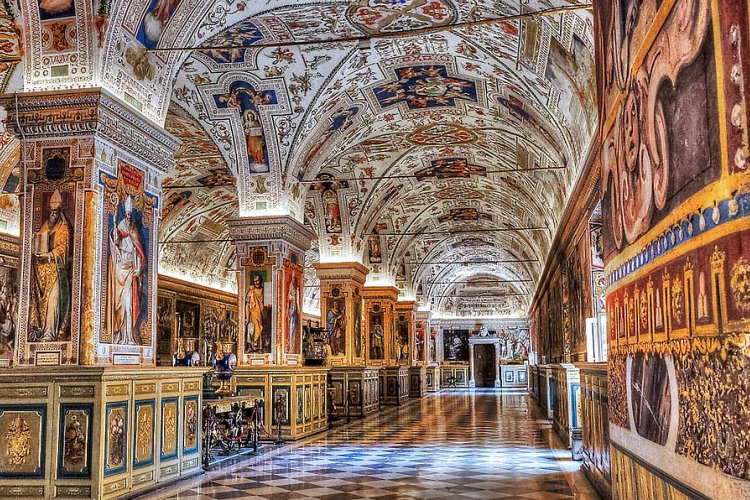
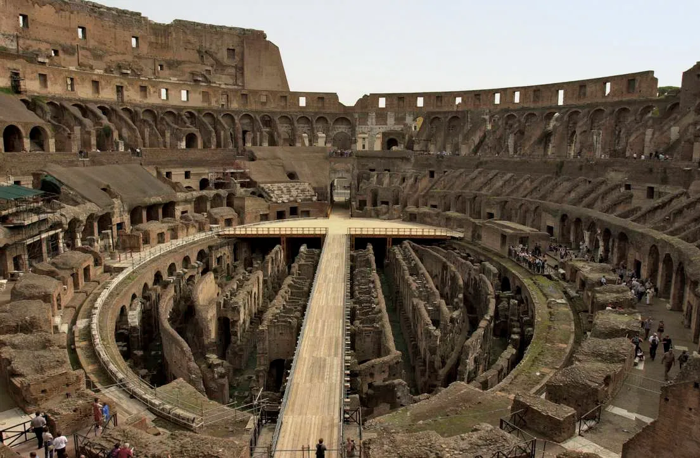

ROME
Rome est l'une des villes les plus vertes d'Europe, un trésor d'art parsemé de parcs et de jardins, riches d'une végétation luxuriante et agrémenté de vestiges archéologiques, de sculptures, de bassins, de fontaines et de belles villas. Des espaces verts enchanteurs font de la capitale une ville pour toutes les saisons : des magnifiques floraisons au printemps aux feuillages romantiques en automne, des promenades régénératrices en hiver aux agréables moments de détente en été.
Outre les résidences historiques des plus importantes familles nobles, comprenant la Villa Borghese, la Villa Doria Pamphilj, la Villa Ada Savoia, la Villa Torlonia, la capitale dispose de véritables poumons verts d'intérêt historique, archéologique et naturel, comme le vaste Parc Régional de l'Appia Antica, et de magnifiques points de vue sur la ville, comme le Jardin des Orangers, le Pincio et la colline du Gianicolo.
La Basilique Saint-Pierre

La Basilique Saint-Pierre, officiellement « Basilica di San Pietro in Vaticano », est le cœur spirituel de l’Église Catholique et le lieu de résidence du pape. L’immense basilique, située dans l’état indépendant du Vatican et sur la place Saint-Pierre du même nom, est construite sur la tombe supposée de Saint-Pierre. Vous trouverez dans la Basilique Saint-Pierre les chefs-d’œuvre tels que le baldaquin du Bernin et « La Pieta » de Michel-Ange, mais vous pouvez aussi visiter les cryptes des 148 tombes des papes. Préparez-vous bien pour votre visite à Saint-Pierre sans quoi vous finirez dans l’interminable file d’attente.
Basilica di San Pietro
La ‘Basilica di San Pietro in Vaticano’ a été construite entre 1506 et 1626 sur les vestiges d’une église de la période de l’empereur Constantin le Grand (324). Selon la légende, le corps de Saint-Pierre reposerait dans cette église. En raison de la longue période de construction, de nombreux créateurs se sont succédé et ont travaillé à la Basilique Saint-Pierre tel que Bramantes, Raphaël, Antonio del Sangallo, Michelangelo et Carlo Maderno. Gian Lorenzo Bernini (dit Le Bernin) est l’auteur des nombreux ornements de la basilique. Les dimensions en particulier (136 mètres de haut et 186 x 123 mètres de large) rendent cette basilique impressionnante.
Castel Sant’Angelo (Château Saint-Ange):

À l’origine, le Castel Sant’Angelo, autrement dit le Château Saint-Ange, datant du 2ème siècle, était un mausolée de l’empereur Hadrien. Après l'apparition de l’archange Michel en 590 et la fin de l’épidémie de peste, le pape Pie II fit ériger une immense staute de bronze de l’archange Michel tout en haut de la forteresse. Le Château Saint-Ange faisait entre autres partie de la ligne de défense de Rome et était l’endroit où les papes pouvaient se cacher, vu que le Vatican était relié au Château Saint-Ange par un tunnel.
Histoire de Castel Sant'Angelo
Castel Sant’Angelo, aussi connu sous le nom de Château Saint-Ange, a été construit au 2ème siècle comme mausolée sous les ordres de l’empereur Hadrien. Le nom de l’archange Michel fut seulement associé à ce mausolée en 590, après que le pape de l’époque, Grégoire I, pendant l’épidémie de peste, ait vu apparaître l’archange Michel au-dessus du mausolée, remettre son épée au fourreau, signe que l’épidémie touchait à sa fin. Plus tard, le pape Pie II fit construire une chapelle à l’endroit où l’archange Michel serait apparu. La statue de bronze remarquable de l’archange Michel fut faite en 1753 par Pieter Antoon Verschaffelt. Le Château Saint-Ange à Rome doit sa renommée à l’adaptation cinématographique d’Anges & Démons: le Mystère de Bernini de Dan Brown, dans lequel le château sert de repaire aux Illuminati.
Musées du Vatican & Chapelle Sixtine

Ces derniers siècles, les papes ont amassé une vaste collection d’art, variant d’objets de l’époque romaine, des reliques religieuses et de nombreuses peintures. Les 54 salles richement décorées des Musées du Vatican vous donneront une idée de ces trésors appartenant à l’Église Catholique. Le point culminant pour de nombreux visiteurs est la fameuse Chapelle Sixtine. La chapelle avec ses superbes peintures d’e.a. Michel-Ange est surtout connue pour les conclaves organisés pour choisir un nouveau pape.
Les musées du Vatican (‘I Musei Vaticani’) comptent parmi les plus grands musées du monde, dotés d’une énorme collection variée, de trésors de l’antiquité romaine et égyptienne, d’objets religieux, de pièces magnifiques peintes à la main et même d’art moderne. Le 26 « musées » du Vatican se situent dans un complexe de plusieurs palais apostoliques et sont de loin les musées les plus populaires de Rome, principalement à cause de la Chapelle Sixtine. Lors de votre visite, vous pourrez admirer les nombreux trésors, répartis en 54 salles, que les papes ont assemblé depuis le 16ème siècle.
Le point culminant de votre chemin à travers les musées du Vatican sera la visite de la Chapelle Sixtine (Capella Sistina). Le nom est dérivé de son fondateur, le pape Sixte IV. Le plafond impressionnant de la Chapelle Sixtine du 15ème siècle a été peint par Michel-Ange au 16ème siècle et représente e.a. l’histoire de la création et du déluge. Les murs sont aussi remarquables avec les peintures sur la vie de Jésus faites par e.a. Ghirlandaio, Botticelli, Perugino et Pinturicchio. Vous trouverez sur le mur derrière l’autel la peinture de Michel-Ange intitulée « Le Dernier Jugement ». La Chapelle Sixtine doit sa renommée à l’espace que les cardinaux utilisent pour leur conclave lorsqu’ils doivent choisir un nouveau pape. Lors de l’élection d’un nouveau pape, de la fumée s’échappe de la cheminée de la chapelle deux fois par jour. Une fumée blanche indique que le nouveau pape a été élu, une fumée noire, que les cardinaux n’ont pas encore accompli leur mission.
Villa Borghese:

Le parc de la Villa Borghese occupe une grande surface au cœur de la ville. La villa contient des bâtiments, des sculptures, des monuments et des fontaines, œuvres d’illustres artistes de l’art baroque, néoclassique et éclectique, entourés d’arbres centenaires, de petits lacs, de jardins à l’italienne et de grands espaces ouverts, créés avec grand soin.
La construction de la villa a été confiée par le cardinal Scipione Borghese, neveu du pape Paul V, à Flaminio Ponzo et à son élève Giovanni Vasanzio, auquel a succédé en 1621 Girolamo Rainaldi. Domenico Savino da Montepulciano a été l’auteur de l’aménagement des jardins. Les travaux commandés par Scipione Borghese ont duré de 1608 à 1633, année de la mort du cardinal.
Au XVIIIe siècle, les travaux de restauration et d’amélioration de la Villa Borghese commandés par Marcantonio Borghese et réalisés par Antonio Asprucci et par son fils Mario ont concerné principalement le Casino Nobile (Casino Noble) et, dans les années suivantes, le parc, où un système d’avenues symétriques et perpendiculaires avec des temples néoclassiques et la Piazza di Siena ont été créés.
Au XIXe siècle, Camillo et Francesco Borghese ont agrandi la surface du parc et, en 1903, la Villa a été achetée par l’État italien et utilisée comme parc public.
Les lieux les plus suggestifs de Villa Borghèse sont: il Giardino del lago, c’est-à-dire le Jardin du Lac où il est possible de louer des petits bateaux et d’admirer, au milieu du lac, le Temple dédié à Esculape et, le long des rives, la Meridiana (le Cadran solaire) et la Fontana della famiglia dei Satiri (la Fontaine de la Famille des Satyres) ; les Jardins Secrets : Giardino dell’Uccelliera, Giardino Vecchio, Giardino della Meridiana e Giardino della Coltivazione (Jardin de la volière, Vieux Jardin, Jardin du Cadran solaire et Jardin de la Culture) reconstruits sur la base d’une documentation historique et iconographique; la Piazza di Siena siège du Concours hippique international, où se déroulent des événements et des concerts, ainsi nommée en hommage de Sienne, la ville d’origine de la famille Borghese ; le Casino Borghese de Vasanzio, où se trouve la Galerie Borghèse ; la Fortezzuola, littéralement petite forteresse, qui abrite aujourd’hui le Museo Canonica ; le Musée étrusque de Villa Giulia, la Galerie Nationale d’Art Moderne et le Parc des daims.
Parc régional de l’Appia Antica:

Le parc régional de l’Appia Antica est un territoire protégé présentant une importance particulière en raison de son intérêt historique, archéologique et naturel. Le parc offre au visiteur une expérience unique dans un cadre suggestif où la nature et d’importants sites archéologiques sont en parfaite harmonie. Ces éléments ont toujours caractérisé cette zone de l’Agro Romano (la campagne autour de Rome) entre la ville et les Castelli Romani, qui a inspiré artistes et hommes de lettres.
Pour protéger et valoriser ce patrimoine culturel et naturel, en 1988 fut institué le Parc Régional de l’Appia Antica (avec la Lois Régionale du 10 Novembre 1988, n. 66), autour de la Voie Appienne, la route la plus importante et célèbre de l’Empire Romain, déjà définie par les Romains comme ʺla reine des voiesʺ.
Le parc a une superficie totale d’environ 3500 hectares, qui comprend la voie Appienne et ses alentours pour 16 kilomètres, la vallée de la Caffarella, le parc archéologique des Tombes de la Via Latina et le parc des Aqueducs.
Le parc s’étend entre les territoires de trois Municipalités : Rome, Ciampino et Marino. La première partie commence depuis les Murs d’Aurélien, où la rue sort de la Porte de Saint Sébastien et se poursuit jusqu'au Mausolée de Cecilia Metella. Aux deux côtés de ce tronçon on peut voir les murs d’enceinte des demeures aristocratiques de la période post-Renaissance. Nolli, dans son plan dessiné en 1748, décrit cette partie comme la Voie entre les vignobles. Les catacombes chrétiennes de Saint Calixte et de Saint Sébastien, qui sont quelques-unes des plus importantes, se trouvent ici.
Le tronçon entre le cirque de Maxence, le tombeau de Cecilia Metella et le GRA (autoroute circulaire autour de Rome) est riche d’un patrimoine archéologique composé principalement des tombes monumentales tout au long de la route. La voie Appienne présente des dalles de basalte originaires bien conservées.
L’imposante Villa dei Quintili est située entre les routes Appia Antica et Appia Nuova. Après le Grande Raccordo Anulare (GRA) le paysage s’ouvre entre les grands domaines de l’Agro Romano jusqu’à la zone des Castelli. Une fois traversé le territoire de Rome, le parc entre dans les Municipalités de Ciampino et Marino jusqu’au carrefour de Frattochie, où la Via Appia Antica se relie avec la Via Appia Nuova. Dans cette zone on trouve les restes de l’ancienne ville latine de Boville.
Un autre élément important de la zone sont les aqueducs qui se trouvent entre via Appia Nuova et via Tuscolana, dont les grandes arcades sont encore visibles. Ils portaient l’eau des collines des environs jusqu’à Rome, et sont des œuvres admirables d’ingénierie romaine. Ici, aujourd’hui comme il y a des siècles, on peut encore voir des troupeaux de moutons faire paître près des imposantes arcades, dans un paysage agreste sans égale.
Le parc archéologique de la Via Latina est aussi important: il y a plusieurs tombes monumentales conservées le long l’ancienne Via Latina. Le siège du parc de l’Appia Antica, point de rendez-vous des visites guidées, est situé dans l’ancienne Papeterie Latina (via Appia Antica, 42).
La via Appia Antica est fermée à la circulation les jours fériés et c’est l’endroit parfait pour promenades à pieds ou en vélo, à la découverte d’un patrimoine naturel, historique et artistique qui est vraiment unique au monde.
Visiter le Colisée, le monument de Rome:
 
Le haut lieu touristique numéro 1 de Rome ville est le Colisée, c’est-a-dire l’énorme amphithéâtre qui pouvait accueillir plus de 65 000 spectateurs à l’époque des Romains. Dans l’arène, les gladiateurs se battaient entre eux et devaient affronter des animaux sauvages. Dans l’énorme « ruine » du Colisée, vous pouvez visiter les tribunes, l’arène et les espaces souterrains de cet amphithéâtre, le plus colossal de l’époque romaine.
Histoire du Colisée
En l’an 72 A.D., l’empereur flavien Vespasien fit construire cet amphithéâtre pouvant accueillir 65 000 spectateurs. La construction du Colisée de Rome dura 8 ans et fut financée grâce aux butins des pillages effectués à Jérusalem. Le Colisée de Rome, aussi appelé Amphitheatrum Flavium, a été inauguré par l’empereur Titus avec des jeux et des festivités qui ont duré 100 jours et pendant lesquels près de 5000 animaux y laissèrent la vie. L’empereur Domitien, successeur de Titus, fit agrandir l’amphithéâtre en ajoutant un étage supplémentaire et quelques espaces sous le Colisée. Le Colisée Rome est ainsi le plus grand amphithéâtre de l’histoire romaine et est considéré comme l’une des sept nouvelles merveilles du monde.
l'Amphithéâtre de Rome
Le but principal du Colisée Rome était d’amuser le peuple (et donc la popularité de l’empereur) avec des combats de gladiateurs, parfois en combinaison avec des animaux sauvages tels que des éléphants et des tigres. Généralement, les combats incluant les animaux sauvages, appelés aussi « bestiarii », avaient lieu en matinée. Pendant la pause, des prisonniers condamnés étaient souvent jetés aux animaux sauvages et l’après-midi, il y avait des combats de gladiateurs. Lorsque le christianisme devint de plus en plus important, ces jeux barbares furent finalement abolis par l’empereur Honorius en 404 A.D.. Le lynchage d’un moine voulant faire cesser le combat entre deux gladiateurs fut la goutte d’eau qui fit déborder le vase. Seuls les spectacles avec les animaux sauvages continuèrent jusqu’en 523.